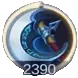
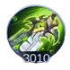

Introduction
Lesley is one of the strongest and most popular Marksman heroes in Mobile Legends. She excels in the late game, growing stronger as the match advances.
This guide will cover her skills, passive abilities, best builds, emblems, gameplay strategies, and tips to counter her effectively.
Why Choose Lesley?
Lesley is currently one of the best Marksman heroes in the game, especially after Claude and Brody were nerfed. She is a great pick in both lower and higher ranks, particularly after the release of her new aspirant skin. Her ability to deal high damage from a safe distance makes her a formidable late-game hero.
Additionally, her long-range attacks, ability to reveal enemies, and high critical damage output make her a difficult hero to counter when played correctly. With the right positioning and itemization, Lesley can carry her team to victory.
Lesley’s Passive: Lethal Shot
Lesley’s passive ability allows her to deal true damage, ignoring any damage reduction effects. If she doesn’t take damage for 5 seconds, her next basic attack gains extra range, a 50% critical chance, and deals 100 true damage. Additionally, her passive converts fixed physical penetration into extra critical damage at a 0.5% rate per point of penetration.
Tips for Use: This passive makes her incredibly deadly against both squishy targets and tanks, as it allows her to bypass enemy defenses efficiently.
Lesley’s Skills
First Skill: Camouflage
Lesley enters a camouflage state, gaining double energy regeneration, 40% extra movement speed, and 85 extra physical attack for 3 seconds. This skill enhances her basic attack and makes her untargetable by basic attacks.
Tips for Use: Use this skill to reposition yourself, escape ganks, or initiate attacks on unsuspecting enemies.
Second Skill: Tactical Grenade
Lesley throws a grenade that deals 150 physical damage and knocks back enemies. This skill can be used to interrupt certain enemy skills and create distance.
Tips for Use: It is especially useful against melee heroes trying to close the gap on you. Use it wisely to maintain your positioning in fights.
Ultimate Skill: Ultimate Snipe
Lesley locks onto a target and fires four bullets, each dealing 250 physical damage plus 5% of the enemy’s lost HP. The skill also reveals enemies hiding in bushes.
Tips for Use: Use it to finish off fleeing enemies or to check bushes for hidden foes before advancing, preventing ambushes and ensuring safer map control.
Best Combos for Lesley
- Hit the enemy with an enhanced passive bullet, use first skill, then second skill for three enhanced shots.
- Use ultimate, fire three bullets, then use second skill before the last bullet for increased damage.
- Use Flicker while using the ultimate to reposition and ensure hits.
Best Build for Lesley
Berserker Fury

Berserker Fury
Boosts Lesley critical damage.

Endless Battle
Provides extra true damage for Lesley.

Blade of Despair
Highest physical attack item for Lesley.

Sea Halberd
Reduces enemy shield and healing.

Wind of Nature
Grants Lesley temporary immunity to physical damage, ideal against physical heroes.

Rose Gold Meteor
Provides Lesley a shield when low on health, useful against magic-based enemies.

Malefic Roar
Helps Lesley penetrate tanky enemies with high armor.
Best Emblems and Talents
Assassin Emblem

Assassin Emblem
Enhances Lesley’s damage output, making her a stronger finisher.
Marksman Emblem
Marksman Emblem
Provides attack speed and lifesteal for sustained damage.
Fatal
Increases critical chance and damage for higher burst potential.
Weapons Master
Boosts Lesley’s physical damage from all sources.
Lethal Ignition
Increases damage output over time, ideal for aggressive playstyles.

Quantum Charge
Improves mobility and sustain, helping Lesley reposition during fights.
Lesley Gameplay Guide
Early Game
Lesley is weak early game. Focus on farming, poking enemies with your passive and first skill, and avoiding direct fights.
Mid Game
Farm and push lanes when possible. Start joining team fights once you have core items, but avoid overextending.
Late Game
Lesley becomes extremely powerful, dealing massive damage even to tanks. Play safely, avoid rotating alone, and position yourself well in fights.
Synergy with Other Heroes
Lesley works well with heroes who can provide crowd control and protection. Some great allies include:
- Tigreal - His crowd control helps keep enemies in place for Lesley’s damage output.
- Angela - Can shield and enhance Lesley’s survivability.
- Franco - Can hook enemies for Lesley to finish off with ease.
Tips to Counter Lesley
- Use assassins like Ling, Helcurt, or Natalia to burst her down before she can deal damage.
- Heroes with crowd control (Franco, Khufra) can lock her down and prevent her escape.
- Use items like Wind of Nature to negate her physical damage for a short duration.
Conclusion
Mastering Lesley requires understanding her passive, skills, and best item builds. With the right strategies, she can be an unstoppable force in Mobile Legends. Whether you're looking to dominate the late game or counter her effectively, following this guide will give you the edge needed to succeed.
 Brody
Brody


 Layla Guide Mobile Legends
Layla Guide Mobile Legends